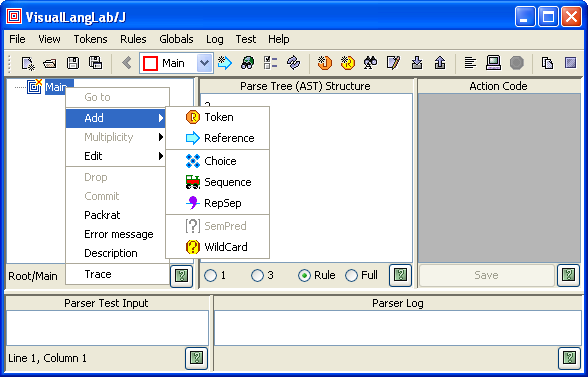

VisualLangLab represents each grammar clause as a named tree with distinct icons for different grammar elements. As an example, consider the following arithmetic expression parser grammar from section 31.1 of Programming in Scala (first edition).
expr ::= term {"*" term | "-" term}
factor ::= floatingPointNumber | "(" expr ")"
term ::= factor {"*" factor | "/" factor}
The figures below show how these parser clauses are represented within VisualLangLab. Although there are numerous details (such as the definition of floatingPointNumber) not explained here, the correspondence between the textual clauses and the graphical grammar trees should be quite obvious.
| expr | factor | term |
| |
The following sections explain the grammar tree icons and their annotations, and show how VisualLangLab's menus and and the grammar tree's context-menus are used to create or edit the grammar tree.
Before reading about how a grammar tree is created or edited, make sure that you understand what the different grammar-tree icons (and their annotations) mean. Annotations -- the text following each icon -- are also explained below.
| Non-terminals | |
 | Root - this icon is used for the root node of every grammar tree (as in Figure-1 above) |
 | Choice - used as the parent of a group of alternative items (any one of which should occur in the input) |
 | Sequence - used as the parent of a sequence of items all of which should occur in the order specified |
 | RepSep - placeholder for a sequence of items (first child node) separated by the designated separator (second child node) |
 | Reference - invokes another named parser |
 | Semantic predicate |
| Terminals | |
 | Literal - a token that matches a specified pattern literally |
 | Regexp - a token that matches a specified regular-expression |
| Icon overlays | |
| Commit - applied to an element in a Sequence ??? | |
 | Error: indicates that an error is present in the associated parser |
The first annotation is a 1-character flag that indicates the node's multiplicity -- the number of times the corresponding entity may occur in the parser's input. Multiplicity has one of the following values:
Observe that the last two values ("0" and "=") are actually commonly required syntactic predictes and have no influence on the information gathered by the parser (into to AST or parse-tree).
The second annotation is the name of the entity. The value displayed depends on the type of the node as described below.
All icons have at least the two annotations described above. All other annotations, described below, are optional. If any of the optional annotations are present, they are enclosed within square brackets ([...]).
When VisualLangLab is started, or a new rule is created by choosing Parsers->New from the main menu, the grammar-tree (displayed at the top left of the GUI) contains just a root node as shown in Figure-2 below. The figure also shows the tree-node context menu that is displayed when you right-click any node of the grammar-node.

Figure-2. Grammar-tree of newly created parser clause